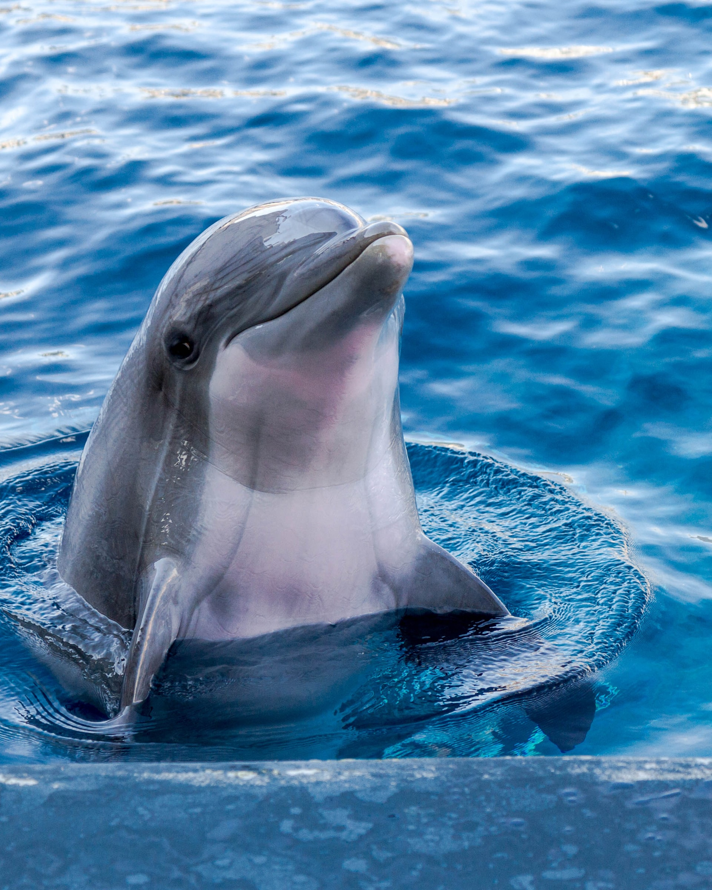
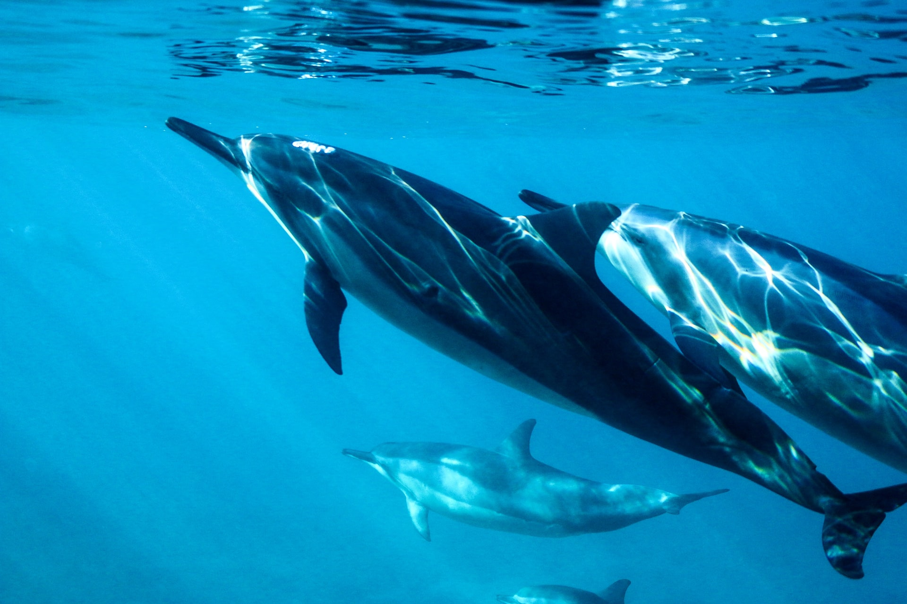
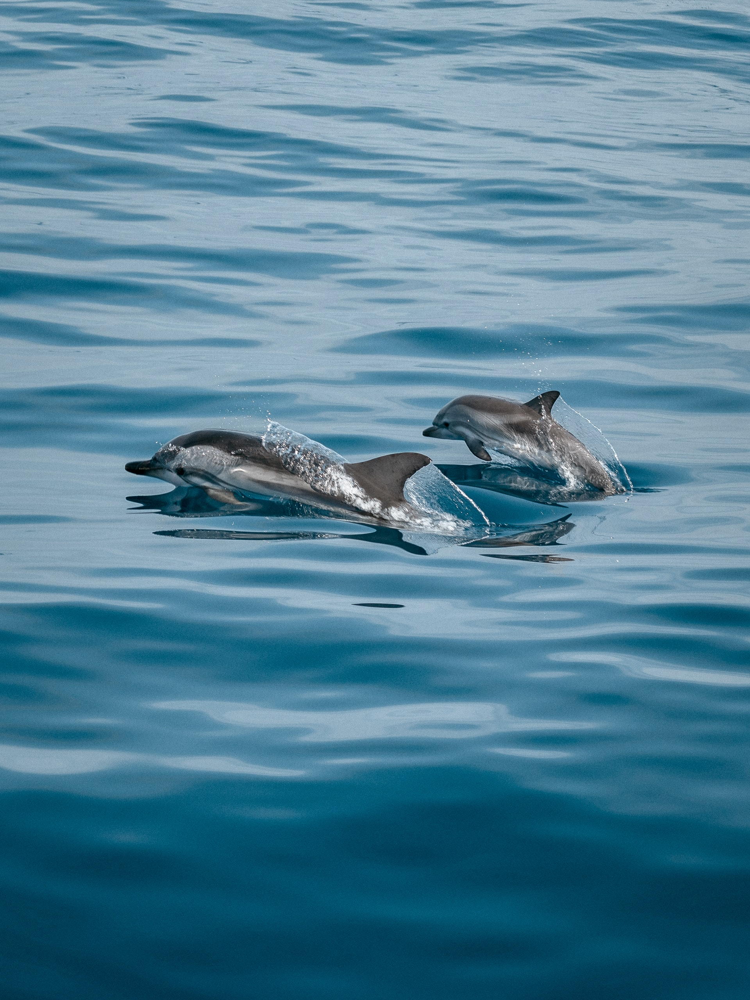

Project 1
DOLPHINS
Were do dolphins live?
Dolphins live in the Pacific ocean; the Atlantic ocean; the Indian ocean; rivers and seas and in threats. Some of the dolphins that live in the Pacific ocean are: bottlenose; spinner and Pacific white-sided dolphins. These species are better adapted to tolerating cold water then their shore-loveing counterparts. The Atlantic ocean is the prefered home of bottlenose; humpback and spotted dolphins. The Indian ocean is the native environment for large numbers of bottlenose; spinner and common dolphins. We are used to seeing dolphins in the oceans, but there are also dolphins in rivers and seas.In the Amazon river there are dolphins which are very small. Dolphins are highly endangered by various factors, especially climate change, pollution, etc. For this reason there are various associations that deal with the care of dolphins.
What do dolphins eat ?
- fish
- squid
- jellyfish
- herring
- mackerel
Dolphins can recognize each other by their unique whistle.
They communicate with each other through the ears instead of the eyes. This is called echolocation. Dolphins can even adjust the signal strength. In a noisy sea, the signal should be stronger than in a calm sea. Dolphins cannot breathe unconsciously like humans. They are thought before they perform breathing, so they bring a part of the body to the surface of the water. But they do not die when they sleep, because only one part of their body is asleep while the rest stays above the water to breathe. This makes dolphins safe.When a dolphin is injured, all the other dolphins help and hold the injured dolphin's body above the water until it reaches its destination.

Interesting videos for dolphins